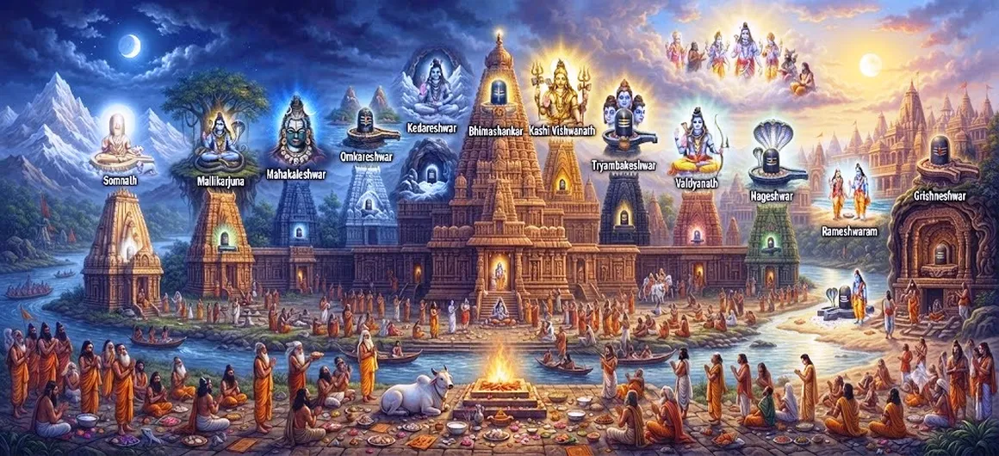

The Twelve Jyotirlinga Incarnations
Chapter 42 of the Shatarudra Samhita presents the sacred Twelve Jyotirlinga manifestations of Lord Shiva. The Jyotirlingas are revered as luminous manifestations of Shiva and occupy a central place in Shaiva devotion, pilgrimage, worship, and remembrance.
The tradition of the twelve Jyotirlingas brings together sacred names, places, stories, and forms of worship. Though the manifestations are associated with different regions and devotional traditions, they are understood as expressions of the one divine presence of Shiva.
This chapter therefore turns from a single incarnation to a sacred twelvefold expression of Shiva, inviting the devotee to contemplate divine light through pilgrimage, worship, remembrance, and inner spiritual practice.
Chapter 42 Highlights
The Twelve Sacred Jyotirlingas
The chapter presents the twelve principal Jyotirlinga manifestations revered in the Shaiva tradition.
The Light of Shiva
Jyotirlinga signifies the sacred association of Shiva with divine light and transcendent presence.
Sacred Pilgrimage
The twelve manifestations are connected with some of the most revered Shaiva pilgrimage traditions.
Names and Sacred Forms
Each Jyotirlinga is remembered through its distinctive sacred name and devotional tradition.
Devotion and Remembrance
Remembering Shiva through the Jyotirlingas becomes a practice of devotion, prayer, and spiritual contemplation.
Unity in Sacred Diversity
The twelve manifestations express one divine reality through diverse sacred traditions and places.
Core Topics / Contents
Meaning of Jyotirlinga
A Jyotirlinga is traditionally understood as a sacred manifestation of Lord Shiva associated with divine light. The word joins jyoti, meaning light or radiance, with linga, the sacred symbol of Shiva.
The Twelve Jyotirlingas
The twelve principal Jyotirlingas are traditionally named as Somnath, Mallikarjuna, Mahakaleshwar, Omkareshwar, Kedarnath, Bhimashankar, Kashi Vishwanath, Trimbakeshwar, Vaidyanath, Nageshwar, Rameshwar, and Grishneshwar.
Somnath and Mallikarjuna
Somnath and Mallikarjuna stand among the most ancient and revered names in the Jyotirlinga tradition. Their remembrance connects devotees with Shiva through sacred place, worship, and pilgrimage.
Mahakaleshwar and Omkareshwar
Mahakaleshwar expresses the profound symbolism of Shiva as Mahakala, while Omkareshwar evokes the sacred sound and form associated with Omkara. Together they invite contemplation on time, eternity, and the Divine.
Kedarnath and Bhimashankar
Kedarnath and Bhimashankar are revered Himalayan and regional centers of Shiva worship. Their traditions emphasize devotion, sacred landscape, pilgrimage, and perseverance.
Kashi Vishwanath and Trimbakeshwar
Kashi Vishwanath represents Shiva as the Lord of Kashi, while Trimbakeshwar is revered as the three-eyed Lord. Both traditions preserve powerful associations with sacred geography and liberation-oriented devotion.
Vaidyanath and Nageshwar
Vaidyanath is revered as the divine healer, while Nageshwar is remembered among the principal Jyotirlinga manifestations. Their worship expresses faith in Shiva's protecting and transformative presence.
Rameshwar and Grishneshwar
Rameshwar and Grishneshwar complete the traditional twelvefold enumeration. Together with the other ten, they form a sacred network through which devotees remember Shiva across diverse regions and traditions.
The Twelve Jyotirlingas
01. Somnath
Somnath is traditionally revered as the first of the twelve Jyotirlingas.
02. Mallikarjuna
Mallikarjuna is traditionally associated with the sacred hill of Shriśaila.
03. Mahakaleshwar
Mahakaleshwar is revered as the powerful manifestation of Shiva known as Mahakala.
04. Omkareshwar
Omkareshwar is associated with the sacred form of Shiva connected with Omkara.
05. Kedarnath
Kedarnath is one of the most revered Himalayan manifestations of Shiva.
06. Bhimashankar
Bhimashankar is remembered among the twelve principal Jyotirlinga shrines.
07. Kashi Vishwanath
Kashi Vishwanath is the sacred Lord of Kashi and a principal Jyotirlinga.
08. Trimbakeshwar
Trimbakeshwar is revered as the three-eyed Lord Shiva at the sacred site near the source region of the Godavari.
09. Vaidyanath
Vaidyanath is revered as Shiva in the form of the divine healer.
10. Nageshwar
Nageshwar is traditionally remembered among the twelve sacred Jyotirlingas.
11. Rameshwar
Rameshwar is revered as the sacred Shiva manifestation associated with Rameshwaram.
12. Grishneshwar
Grishneshwar completes the traditional list of the twelve Jyotirlingas.
Key Teachings
Remember the Divine Light
The Jyotirlinga tradition encourages remembrance of Shiva as the radiant, all-pervading Divine.
Let Pilgrimage Become Inner Practice
A sacred journey has greater meaning when outer pilgrimage is accompanied by inner purification and reflection.
Honor Sacred Diversity
Different sacred places can express devotion to the same Divine reality.
Hold to Devotion
The twelve manifestations encourage steady remembrance of Shiva through prayer, worship, and sincere devotion.
See Unity in Many Forms
The many sacred names and places point toward one underlying divine reality.
Carry the Shrine Within
The deepest purpose of sacred remembrance is to awaken awareness of Shiva within daily life.
Spiritual Reflection
The Twelve Jyotirlingas invite the devotee to see Shiva as divine light that can be remembered in many sacred places and through many forms of worship. The outer journey to a shrine can become an inner journey when pilgrimage is joined with humility, prayer, self-discipline, and sincere remembrance.
Living the Message
Create a daily moment of quiet remembrance of Shiva. A short prayer, mantra, or period of stillness can become a personal inner shrine.
When visiting a sacred place, let the journey include reflection as well as sightseeing. Carry the spirit of the shrine back into ordinary responsibilities.
Remember that many sacred forms can point toward one Divine reality. Let diversity deepen devotion rather than create division.
Key Spiritual Concepts
A sacred manifestation of Shiva associated with divine light and radiant spiritual presence.
Light, radiance, or luminous brilliance; in this context, sacred divine light.
The sacred symbol of Lord Shiva, representing the Divine beyond ordinary form.
Sacred seeing or spiritual vision received through the presence of a revered deity or shrine.
A sacred place of pilgrimage understood as a crossing point toward spiritual purification and realization.
Devotion, love, remembrance, and surrender directed toward the Divine.
Chapter Summary
Shatarudra Samhita Chapter 42 presents the Twelve Jyotirlinga manifestations of Lord Shiva. Beginning with the meaning of Jyotirlinga, the chapter brings together the traditional twelve names: Somnath, Mallikarjuna, Mahakaleshwar, Omkareshwar, Kedarnath, Bhimashankar, Kashi Vishwanath, Trimbakeshwar, Vaidyanath, Nageshwar, Rameshwar, and Grishneshwar. Their sacred traditions emphasize Shiva's divine light, devotion, pilgrimage, remembrance, and the unity underlying diverse forms and places of worship.
Frequently Asked Questions
1. What is the main subject of Shatarudra Samhita Chapter 42?
Chapter 42 presents the traditional Twelve Jyotirlinga manifestations of Lord Shiva and reflects on their spiritual significance.
2. What are the Twelve Jyotirlingas?
The traditional list is Somnath, Mallikarjuna, Mahakaleshwar, Omkareshwar, Kedarnath, Bhimashankar, Kashi Vishwanath, Trimbakeshwar, Vaidyanath, Nageshwar, Rameshwar, and Grishneshwar.
3. What does Jyotirlinga mean?
Jyotirlinga refers to a sacred manifestation of Shiva associated with divine light or radiance.
4. Why are the Twelve Jyotirlingas important?
They are revered as principal sacred manifestations of Lord Shiva and are central to traditions of worship, remembrance, pilgrimage, and spiritual contemplation.
5. How does Chapter 42 follow Chapter 41?
Chapter 41 describes Lord Shiva's incarnation as Kirata, while Chapter 42 turns to the Twelve Jyotirlinga manifestations.
6. What comes after Chapter 42?
The next page is Kotirudra Samhita Overview, available at kotirudra-samhita.html.
“The many sacred lights of Shiva point toward one Divine presence, remembered through devotion, pilgrimage, and inner realization.”
Continue Through Shatarudra Samhita
Chapter 42 presents the Twelve Jyotirlinga manifestations and leads onward to the Kotirudra Samhita Overview.